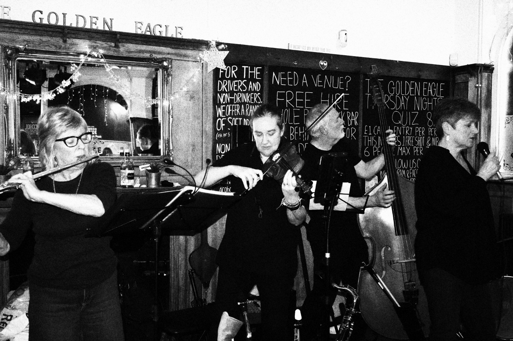
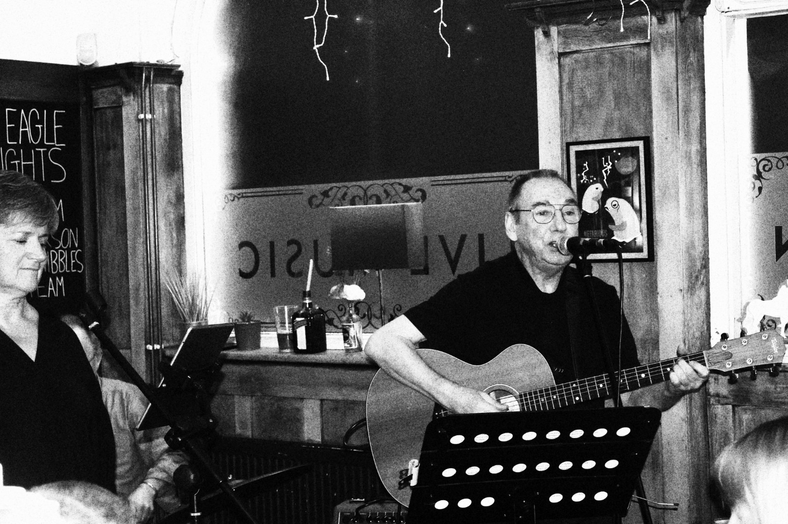

Photos
A few moments on stage
Harbour Town live at the Golden Eagle in Southsea, photographed in January 2024.



Photos
Harbour Town live at the Golden Eagle in Southsea, photographed in January 2024.

